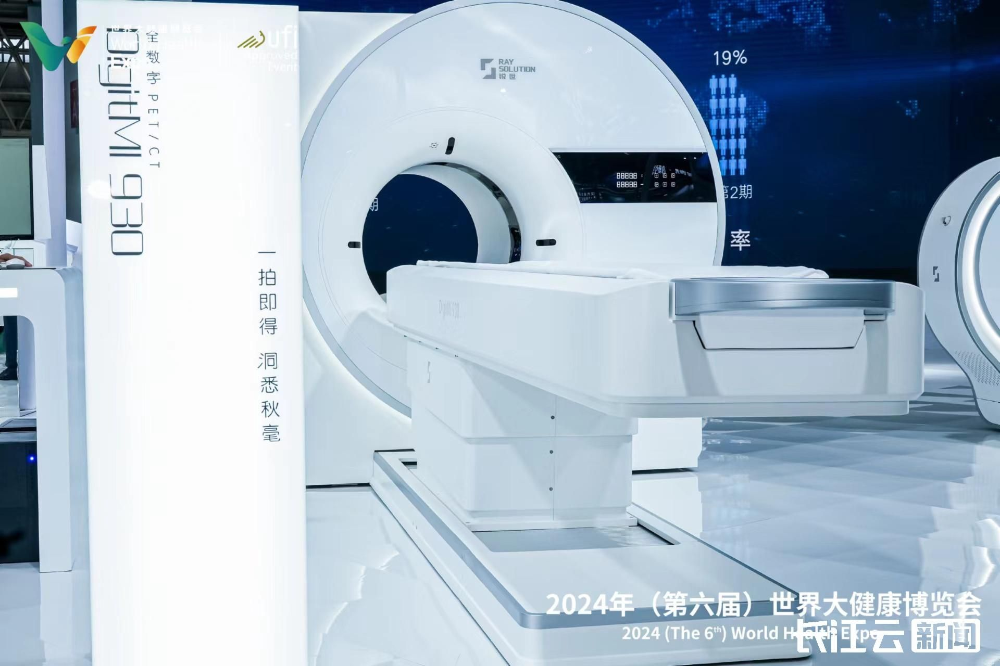
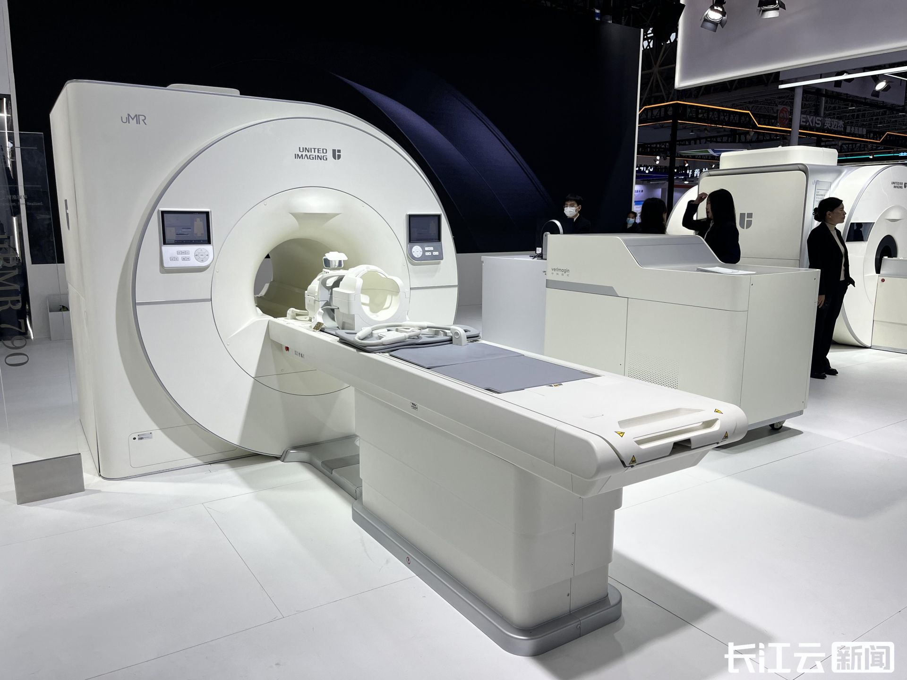

鄂研鄂产鄂用 健博会上的“全球领先”产品
2024年世界大健康博览会正在武汉举行，近6000家企业参展，其中，值得一提的是，在湖北研发、生产并使用的“鄂研鄂产鄂用”高端医
疗装备，也备受关注，成为全场亮点之一，吸引着众多客商参观考察、对接洽谈。
全球首台全数字PET-CT 多款型号“疾病预警机”一同亮相

作为中国高端医疗器械代表性成果——数字PET，其代表企业锐世医疗，本次展会共带来了4款拥有完全自主知识产权的“疾病预警机”设备。
其中，临床全身全数字PET/CT（DigitMI 930）综合性能指标国际领先，它可以在135秒内完成全身扫描，一天的接诊量可以达到100人，并
且该设备检查所使用的放射性显影剂用量也降到了传统PET的1/3，不仅能在检查过程中减少辐射，对老人、儿童等辐射敏感人群更加友好，
还大幅降低了医院的运营成本；同时，该产品还拥有更高的图像质量，高清成像能够帮助医生更快、更准、更早地诊断癌症等重大疾病，堪称
名副其实的“癌症预警机”。另一款脑部专用全数字PET（DigitMI i30），这也是目前国内唯一一款获得三类医疗器械注册证的商用脑部专用
PET产品。大脑是人体最精密复杂的器官，对设备的性能要求极为苛刻。戴键介绍，相比全身PET，DigitMI i30拥有更优的空间分辨率、更高
的灵敏度、更好的时间分辨率和更佳的图像质量，它可以实现脑部功能活动的动态监测，在脑肿瘤、老年痴呆、帕金森、癫痫等神经系统疾病
的早期诊断上具有极大的应用潜力，堪称“脑病预警机”。
除此之外，锐世医疗还展示了公司的概念级产品，变结构PET，也是当前唯一一个扫描孔径可变的PET，它可以针对扫描对象的大小实现探测孔
径的变化，大幅提升了应用适应性。
去年以来，基于上届健博会上达成的“数字PET创新协同发展战略签约仪式”，锐世医疗发展迅速，有多个产品依次获批上市，成为国内PET产品矩阵最丰富的厂家之一。经过一年发展，数字PET在山东费县的生产基地也已建设完成并进入正常运营，全面扩充了产能。
本届健博会，他们还设置了海外配对会洽谈区，方便国内外企业进行面对面的商务对接活动，助力推动国际原创的数字PET扬帆出海。
全球首台肺部气体磁共振成像系统 已完成产品注册并推向市场
武汉中科极化医疗科技有限公司带来的人体肺部气体磁共振成像系统，由中国科学院精密测量科学与技术创新研究院研发，并牵头联影医疗发起成立武汉中科极化医疗科技有限公司，目前，该技术已经获国家药品监督管理局批准上市。这是当前全球首台获批的可用于气体成像的临床多核磁共振成像系统，解决了临床无创无辐射精准检测肺部疾病的难题。

据了解，精密测量院超灵敏磁共振团队历经十余年攻关，在气体磁共振信号增强的超极化技术、超快肺部气体磁共振成像技术、人体多核磁
共振成像技术等方面实现全面突破。团队研发的人体肺部气体多核磁共振成像系统由“医用氙气体发生器”（型号：verImagin VIP510）和“人体多核磁共振成像系统”（型号：uMR 780(Xe)）两大核心装置组成，有效解决了肺部检测中气体密度低导致磁共振成像信号极弱的难题，实现了临床单核向多核磁共振成像系统的拓展，使肺部空腔影像诊断由“不可看”到“看得清”。
该研究得到国家自然科学基金委国家重大科研仪器设备研制专项（部委推荐）、中国科学院科研仪器设备研制项目和成果转移转化重点专项（弘光专项）等的接续支持。2020年9月，核心装备“医用氙气体发生器”获得全球首个同类医疗器械注册证；2023年8月16日，多核磁共振成像系统获批上市，成为全球首个可用于气体成像的临床多核磁共振成像产品。目前，该系统已在北京、上海、武汉等地10余家三甲医院及科研单位开展临床应用研究，对肺癌、慢阻肺等肺部疾病的早发现、早诊断、早治疗具有重大临床意义。
（长江云新闻记者 洪亚飞）